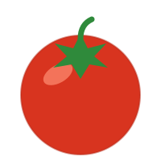
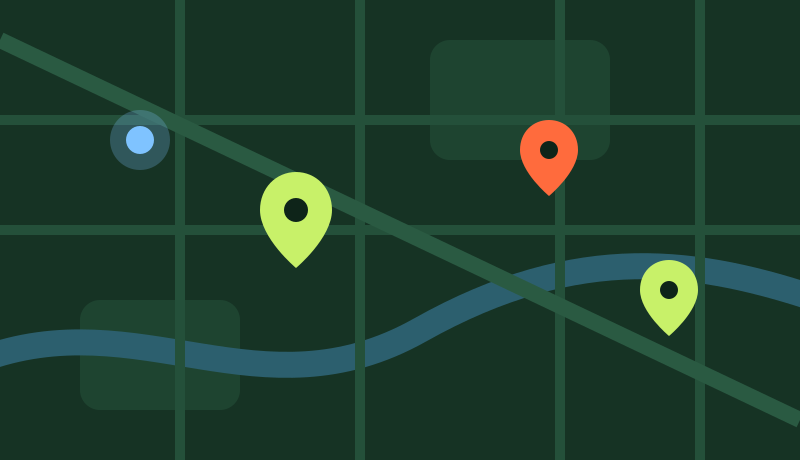

Ubica tu huerto
Arrastra el pin o usa el GPS de tu celular. La dirección se llena sola con las coordenadas.
Registra tu huerto con su ubicación exacta, organiza tus siembras en un calendario y recibe pedidos que un repartidor lleva hasta la puerta.

Tres pasos y tu huerto queda listo para que tus vecinos te encuentren.
Arrastra el pin o usa el GPS de tu celular. La dirección se llena sola con las coordenadas.
Un calendario con riegos, cosechas y entregas. Cada pedido aparece marcado en su día.
Registra pedidos con su punto de entrega. El repartidor ve la ruta del día en su mapa.

Los pines verdes son huertos, los naranjas entregas pendientes y el punto azul es el repartidor en vivo.
Registra su huerto, su cosecha en kilos y los pedidos que recibe.
Ve sus entregas en el mapa, abre la ruta y marca cada pedido como entregado.
Supervisa usuarios, huertos y pedidos desde un panel con mapa general.